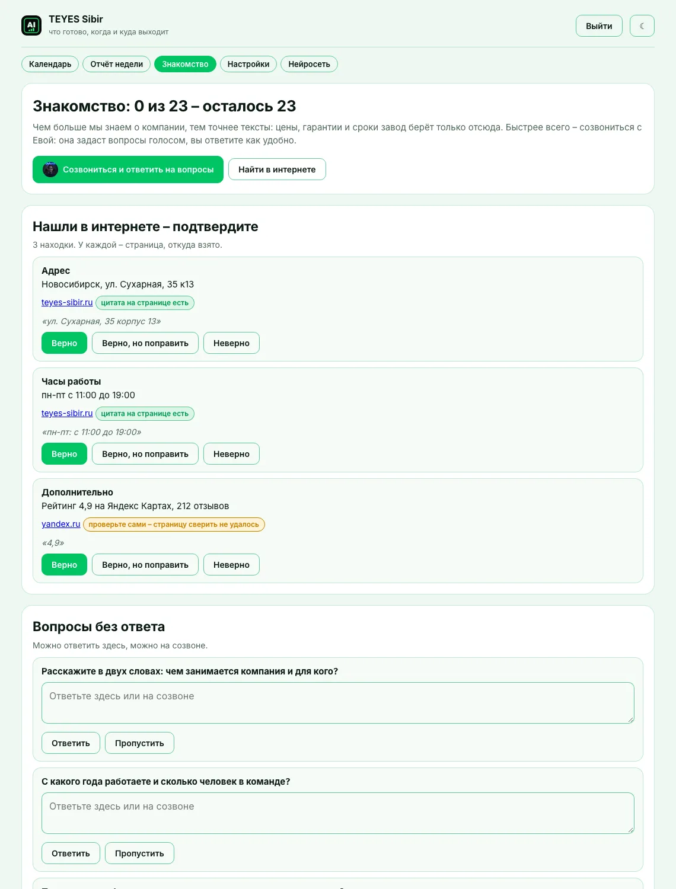
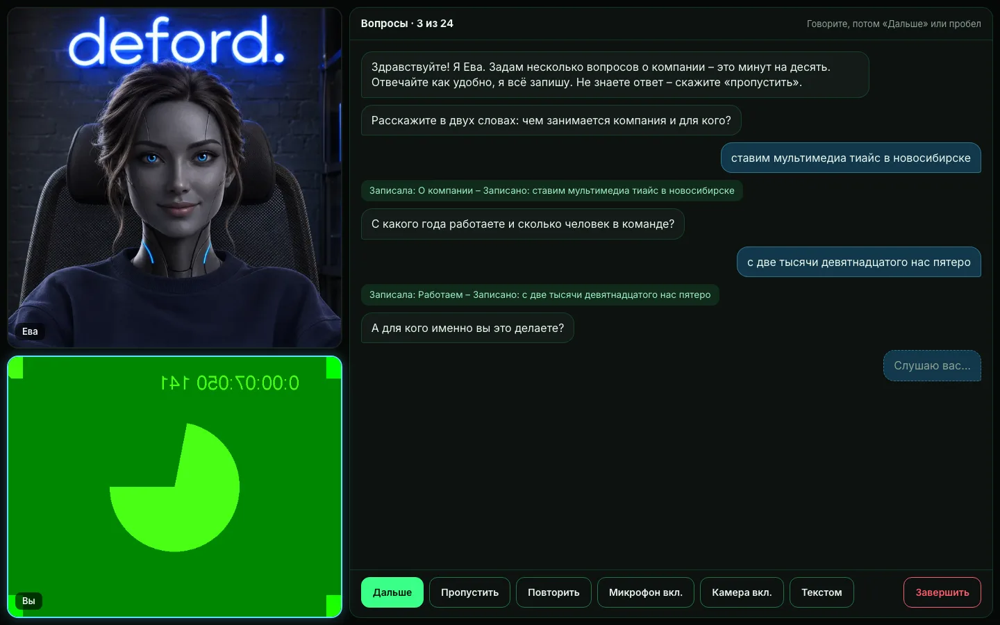
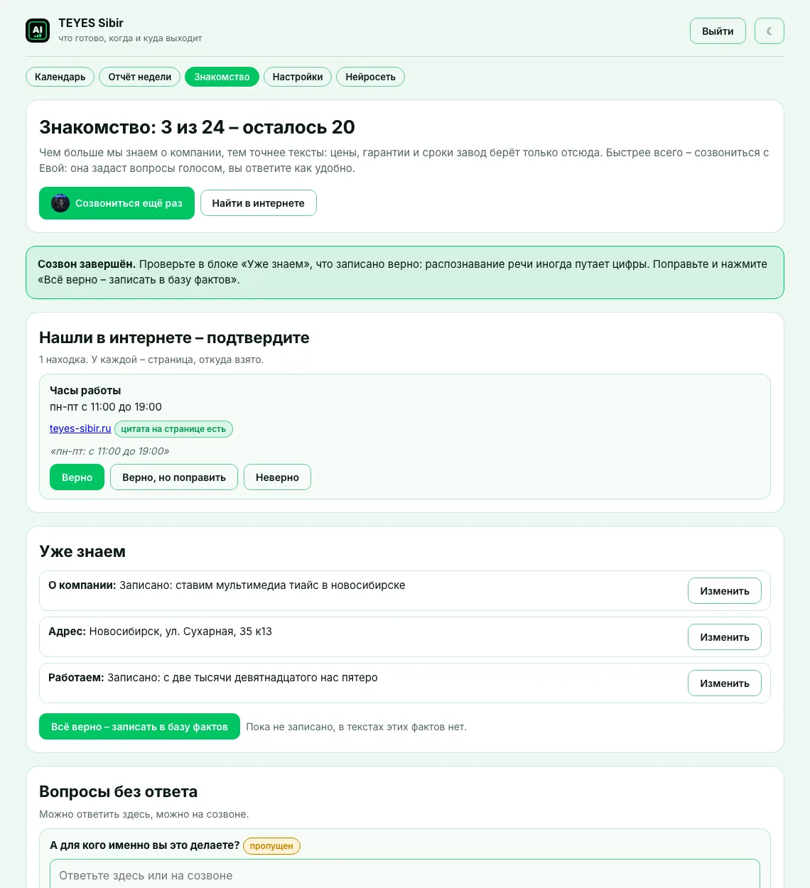
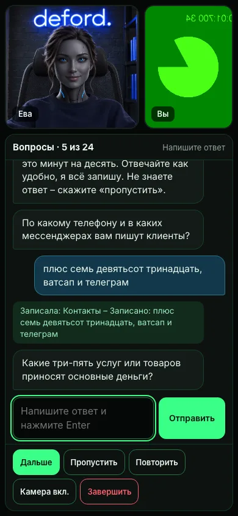

Завод сам знакомится с клиентом: поиск в интернете и созвон с Евой
Знакомство по интернету и созвон с Евой собраны и выложены на сервер 17.11, но видны пока только тебе под входом СВЕРХ админа. Вживую с настоящим голосом и настоящей нейросетью созвон ещё никто не проходил: это и есть приёмка.
Нужно от тебя, три шага:
- Зайти в кабинет TEYES под СВЕРХ админом → вкладка «Знакомство» → «Найти в интернете». Через две-три минуты появятся находки. То же для Баланса и EV. Сам я это запустить не смог: запись в боевую базу мне закрыта, а твой пароль я не беру.
- Нажать «Созвониться и ответить на вопросы» в Chrome и пройти хотя бы пять вопросов голосом.
- Ответить пятью буквами по странице вариантов и сказать, можно ли положить ключ OpenRouter в завод для голоса Мередит.
Что теперь умеет завод
Анкета клиента – 22 вопроса в семи разделах: компания, услуги и цены, гарантии и сроки, клиенты, отличия, запреты и тон, заявка. У каждого вопроса состояние: спросить, нашли в интернете, подтверждено, отвечено, неверно, пропущено.
Поиск в интернете. Станция завода идёт по сайту клиента, картам, 2ГИС, отзывам и соцсетям. Каждая находка приходит с адресом страницы и дословной цитатой. Код сам открывает страницу и сверяет цитату. Не сверилось – находка остаётся, но с жёлтой пометкой «проверьте сами».

Созвон с Евой. Окно как звонок: Ева большой плиткой, твоя камера в углу, справа вопросы. Ева говорит голосом, ты отвечаешь голосом или текстом. Сначала она показывает всё найденное разом и спрашивает, верно ли. Потом идёт по вопросам без ответа. Ответ уходит по паузе в 4 секунды, по кнопке «Дальше» или пробелом.

Уточняющие вопросы. Ответ сохраняется сразу, следующий вопрос идёт без ожидания. Нейросеть в это время разбирает ответ: вынимает суть и, если не хватает цифры или срока, ставит уточняющий вопрос следом.
Итог только по «да». После созвона – список «что я записала». Правишь, снимаешь галочки, жмёшь «Всё верно». Только тогда факты попадают в базу и в тексты.


Что проверено и чем
| Что | Как проверено | Итог |
|---|---|---|
| Весь код | 673 теста, из них 82 новых | проходят |
| Промт поиска | три боевые компании, настоящий Claude на сервере, 6 вызовов | 50 находок, 45 сверены кодом, выдумок не найдено |
| Созвон целиком | браузер 1440 и 390, подставные камера, распознавание и нейросеть | проходит до записи фактов, ошибок страницы нет |
| Защита | независимый ревизор, свои пробы | чужой сайт недоступен ни по одному маршруту |
| Живой адрес | после выкладки | без входа 401 на всех маршрутах, окно отдаётся |
По компаниям: TEYES – 18 находок, все сверены; EV – 17, все сверены; Баланс – 15, сверены 10. Пять находок Баланса с Zoon и Яндекс Карт не сверились: эти площадки отвечают отказом на частые запросы.
Ревизор нашёл 12 дефектов, все исправлены до выкладки. Самые опасные: клиент мог наплодить десятки процессов нейросети; кривой ответ модели подтверждал всё найденное, включая то, что человек назвал неверным; второе «нет» могло лечь в базу фактов словом «нет».
Правила, которые я заложил
Важные – на них держится доверие к фактам. Менять только осознанно.
| Правило | Зачем |
|---|---|
| В базу фактов – только после «Всё верно» | распознавание речи путает цифры |
| Находка – только с адресом страницы и цитатой, цитату сверяет код | иначе нейросеть выдумает |
| Непонятный ответ нейросети ничего не подтверждает | молчание не знак согласия |
| Разбор не затирает правку человека | человек главнее модели |
| Клиент видит только свой сайт | чужие данные |
| Раздел закрыт клиентам, пока ты не откроешь | клиент не должен видеть недоделанное |
| Не больше 3 разборов сразу, каждый до 90 секунд | иначе клиент может положить сервер |
| Поиск в интернете – всегда нейросеть студии | у ключа клиента нет поиска |
| Разбор ответов – на ключе клиента, если он задан; на наш не уходит | твоё правило про деньги клиента |
| Камера никуда не уходит и не пишется | это не видеозвонок |
Неважные – значения по умолчанию, меняются одной строкой.
| Что | Сейчас |
|---|---|
| Сами вопросы и их формулировки | 22 штуки |
| Пауза до отправки ответа | 4 секунды |
| Найденное подтверждать | пачкой; можно по одному |
| Уточнений на вопрос | не больше двух |
| Поиск в интернете клиенту | раз в сутки |
| Длина одного факта | 400 знаков |
| Имя и лицо собеседника | Ева; для клиента задаётся в настройках сайта |
| Голос | голос браузера |
| Слова приветствия и прощания | в коде беседы |
| Сколько ищет нейросеть | до 10 поисков и 15 страниц |
Что не проверено и где риск
- Живой голос. Распознавание речи в твоём Chrome не проверено: в проверке стояла подставка. Из России оно ходит на серверы Google и может не ответить – тогда окно само переключится на текст.
- Настоящий разбор ответов. Промт разбора проверен только на подставных ответах. По правилу студии промт готов после 3–5 реальных примеров – их даст твой первый созвон.
- Поиск через очередь завода на сервере целиком не запускался: вызовы шли вручную той же командой.
- «Сверено» значит «цитата есть на странице», а не «факт верен». Пример: год основания Баланса с чужого сайта мог оказаться годом тёзки. Поэтому подтверждаешь ты.
- Сеть филиалов. У Баланса поиск вернул адрес одного клуба из трёх. Нужна доработка под филиалы.
- Голос Евы пока роботный. Мередит – после твоего выбора на странице вариантов.
Код, коммиты и цена
Репо tema-mail/zavod-ai-sfera, ветка main, семь коммитов 424e59d … 583f801. - `engine/anketa.py` – анкета, 22 пункта, запись в настройки по «да». Миграция базы 14: три таблицы. - `engine/znakomstvo_internet.py`, `engine/st_znakomstvo.py` – поиск в интернете и сверка цитат. - `engine/beseda.py` – порядок вопросов, разбор ответа, итог. - `engine/api_znakomstvo.py` – 13 маршрутов для кабинета, окна созвона и пульта. - `web/znakomstvo.js` – вкладка в кабинете; `web/zvonok.html`, `web/zvonok.js` – окно созвона. - План со всеми решениями: `docs/plan-znakomstvo.md`. Цена одного поиска по компании: 83–133 секунды и $0,25–0,33 в пересчёте на тариф, по факту идёт по подписке студии. Созвон: один вызов нейросети на ответ, около 10 секунд в фоне. Открыть раздел клиенту: настройка сайта `znakomstvo_klientu: true`.Что раскрыть
- Как именно Ева решает, задавать ли уточняющий вопрос, и текст этого промта.
- Какие 22 вопроса в анкете и что из них ищется в интернете.
- Что нужно доделать для сети филиалов.
- Как подключить настоящие «Встречи» вместо имитации и сколько это стоит.